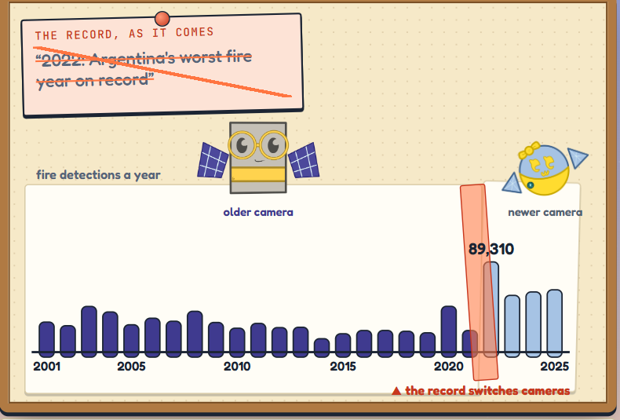
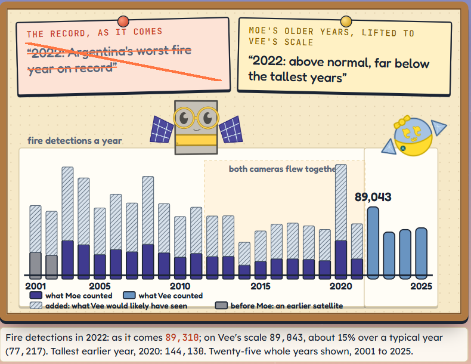
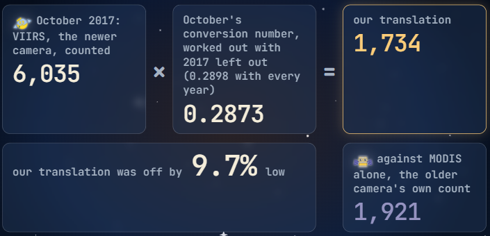
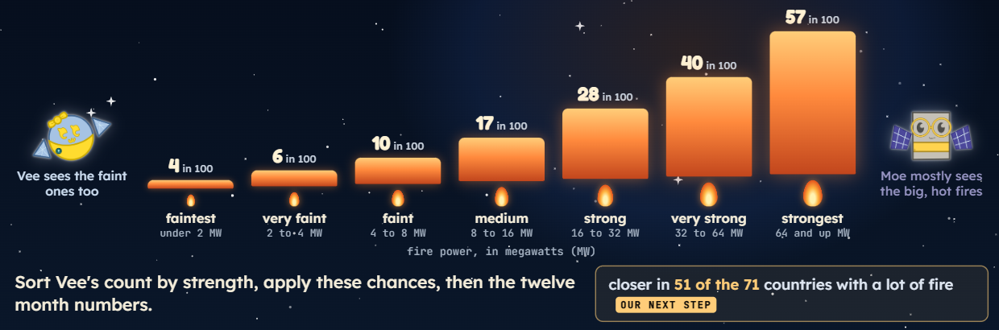
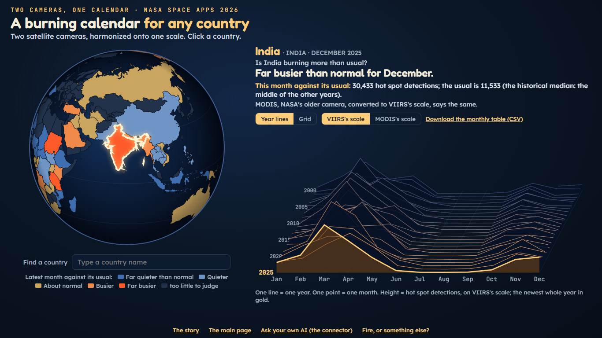
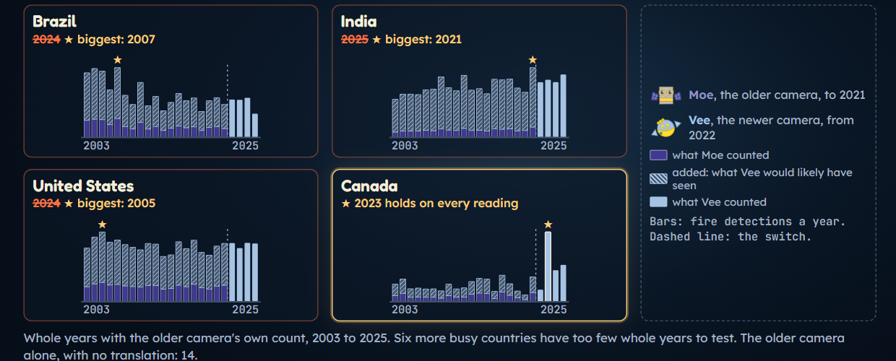
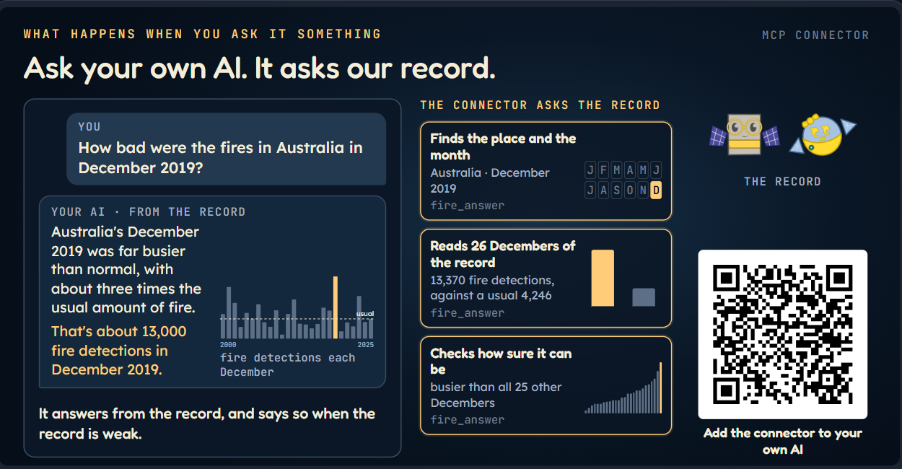
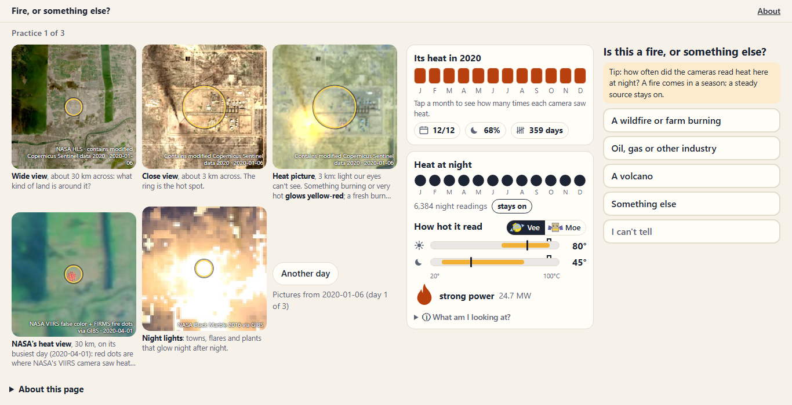

NASA Space Apps 2026 · Challenge: Harmonization of MODIS and VIIRS Hot Spots
Two Cameras, One Calendar
Spark Squad, a homeschool family team

We built a harmonized burning calendar for any country, in a web app, from NASA's two fire cameras.
The problem
Two cameras, one record that jumps
Moe is MODIS, the older camera. Vee is VIIRS, the newer one, with sharper eyes.
Stitched together, Argentina's 2022 looks like its worst fire year on record: 89,310 hot spot detections against an earlier biggest year of 45,295.
The jump starts exactly where the record switches cameras.

Our harmonization
Ten shared years give one scale
We learn from ten years when both cameras flew, 2012 to 2021. From those years: a conversion number for each month of the year, country by country, wherever the data support it.
Argentina, August: 62,467 ÷ 169,528 = 0.37
Multiply or divide, and every year sits on one scale. On one scale, 2022 is above normal (89,043 against a typical 77,217), far below the tallest years.

How we know it works
Hold a year out, translate it, compare
October 2017: 6,035 × 0.2873 = 1,734, against 1,921 that the older camera really counted: 9.7% low.
A typical month in Argentina lands within 9.5%; all 71 countries with a lot of fire within 25%.
A smarter version also sorts hot spots by fire power: Argentina within 7.0%. Built and tested; switching it on is our next step.
Agreement is with the older camera's own count, not with the ground.


What the challenge asked for
A burning calendar, in a web app

Turn the globe and click any of 235 countries and territories.
Its answer in plain words; this month against its historical median; the calendar as year lines or a grid; a CSV download.
What one scale changes, and more ways in
Stitched, 63 of 65 show a new biggest year. On one scale, 9 do.



Why it matters · how it was made · where to find it
Tell a truly unusual season from a change of camera
For early-warning teams and emergency responders, scientists and land managers.
NASA data at the core: NASA FIRMS hot spots from MODIS and VIIRS; NASA GIBS pictures.
Made with plain HTML, CSS and JavaScript, and a Node.js connector. Code written with AI coding assistants, directed and reviewed by the team; the main numbers recounted by a second AI model family.